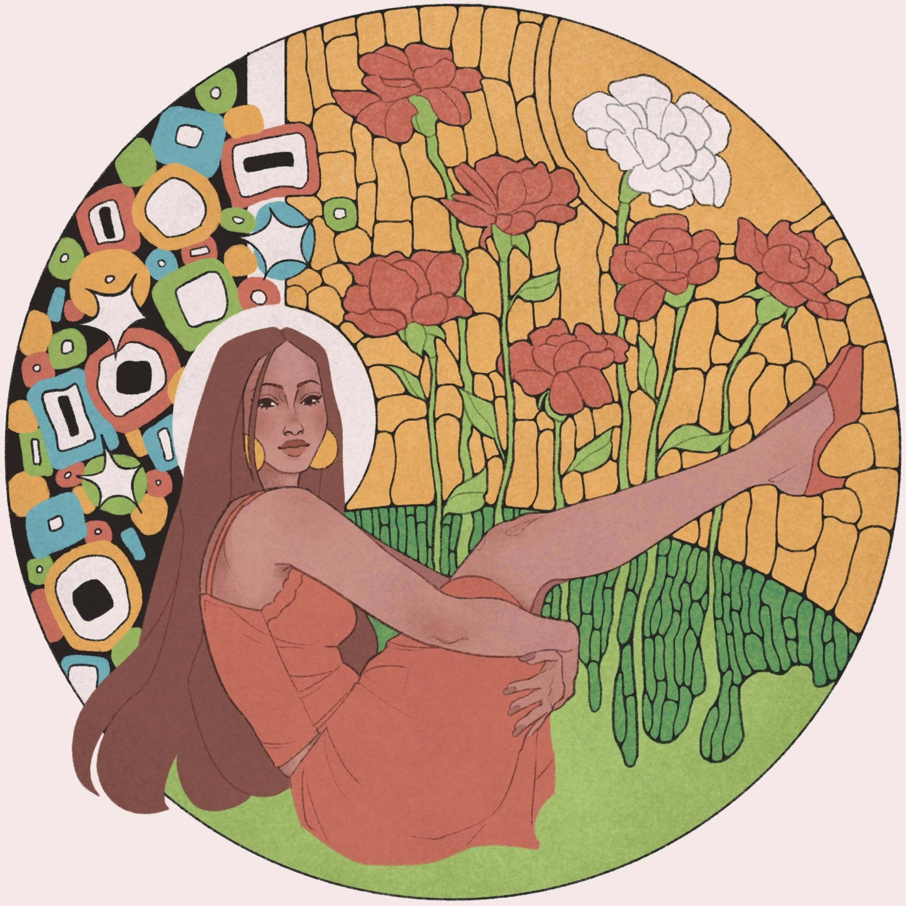
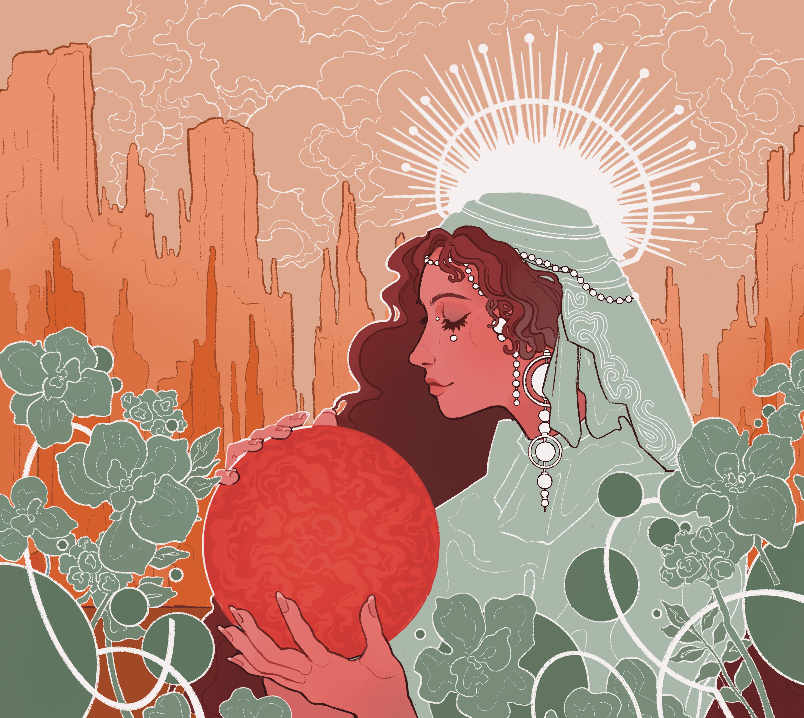
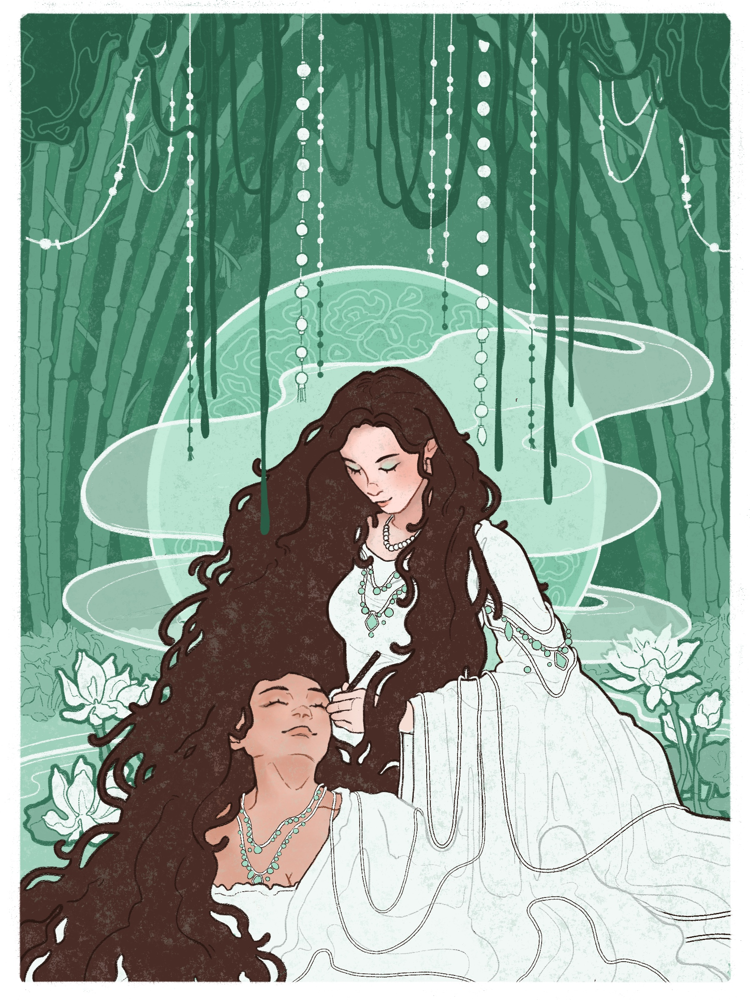
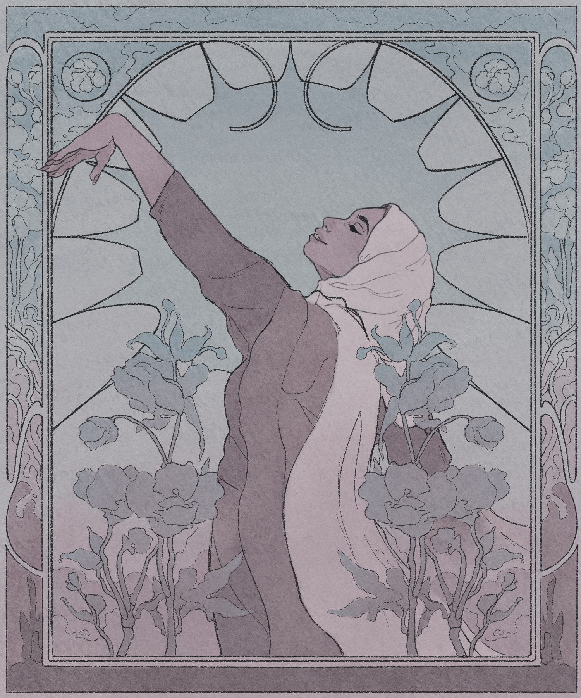
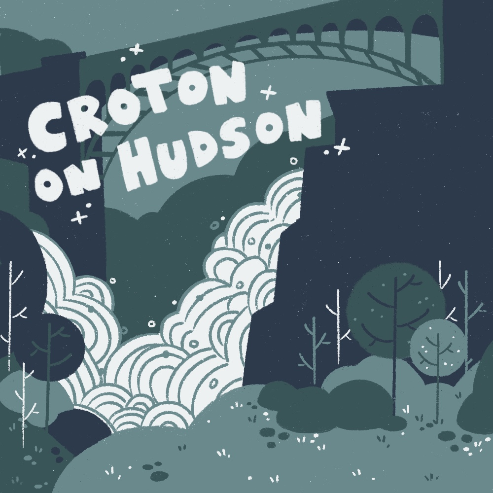
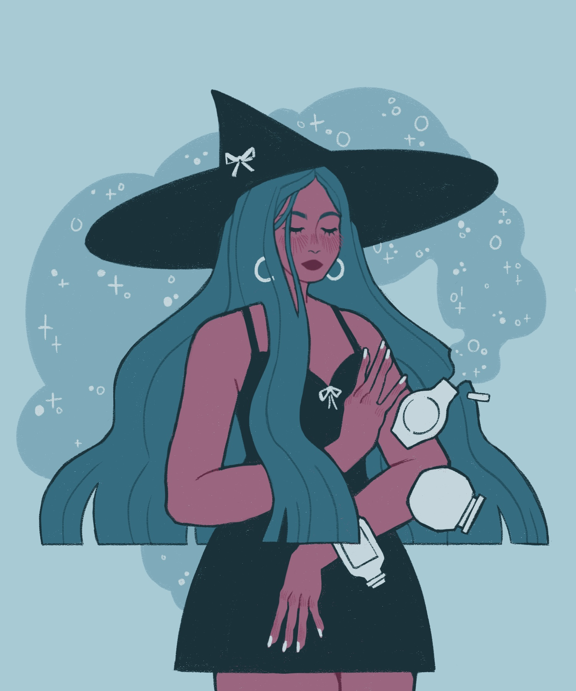
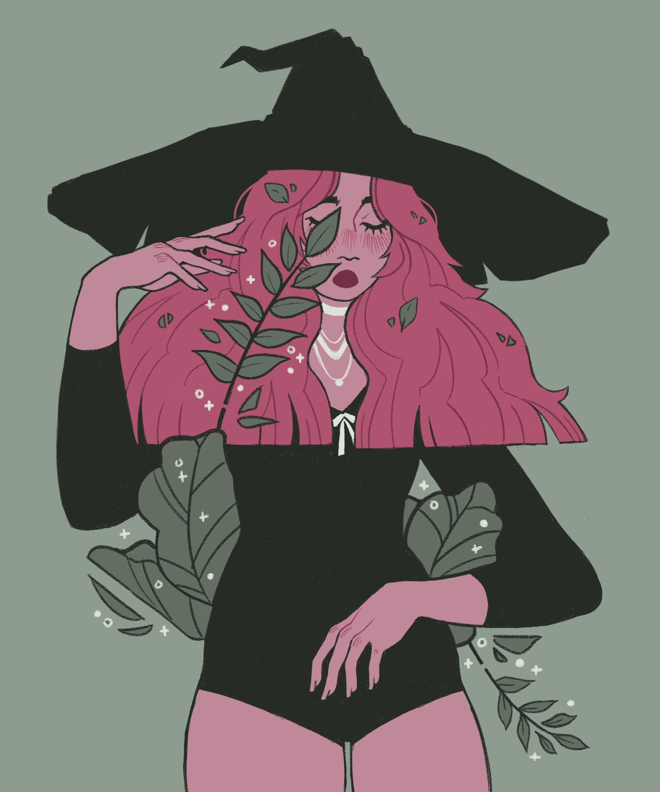

Personal Work
Personal Drawings ✸ Illustration
Year
2023 - 2025
Client
ARC Magazine
Skills
Art Historical Research, Line Quality, Color
These personal illustrations explore narrative, symbolism, and storytelling, drawing on my interest in art historical styles, particularly Art Nouveau.
I focus on creating cohesive and engaging color palettes, refining line work, and observing details closely, drawing from my formal artistic training. My personal drawings are a space to experiment with narrative and composition, turning visual conepts into images that feel thoughtful, expressive, and reflective of imagination.






